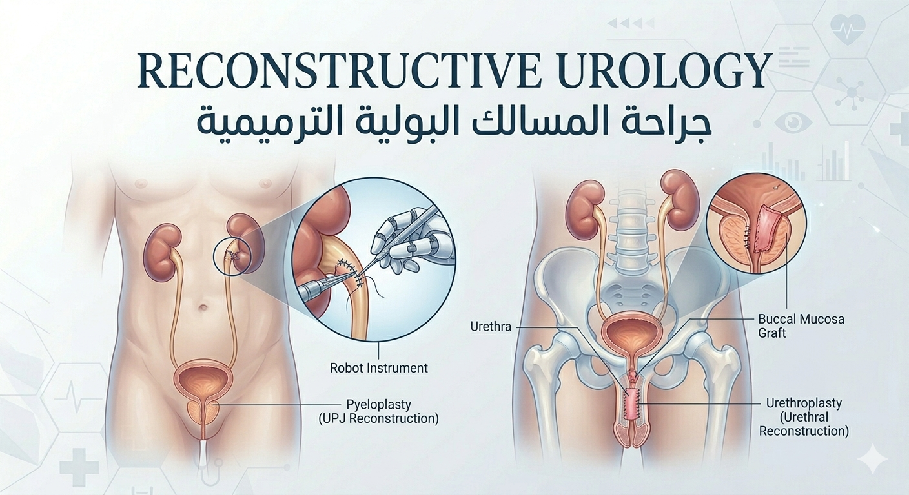
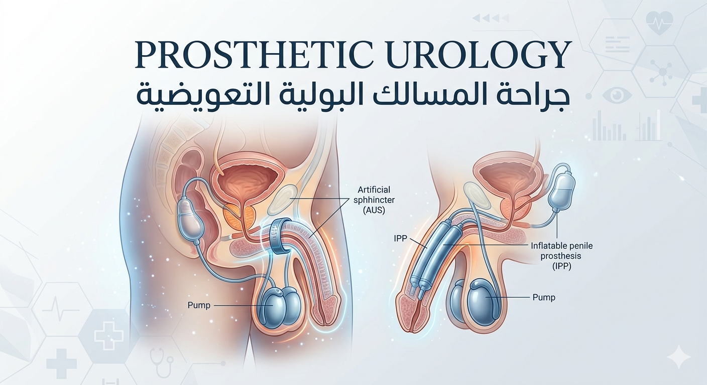
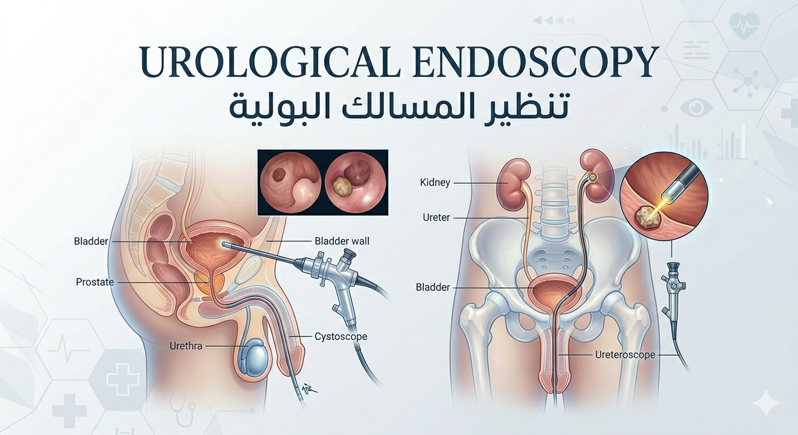

د. محمد عماد الدين
Dr. Mohamed Emad
مدرس المسالك البولية · جراح ترميم · رسام طبي
Lecturer of Urology · Reconstructive Surgeon · Medical Illustrator
"أحوّل جراحات المسالك المعقدة إلى قصص بصرية واضحة — حيث تلتقي الجراحة بالفن"
"Transforming complex urology into clear visual stories — where surgery meets art."

جراح.
فنان.
معلم.
Surgeon.
Artist.
Educator.
د. محمد عماد الدين أستاذ مساعد المسالك البولية بجامعة بني سويف، متخصص في جراحة مجرى البول والجهاز التناسلي المعقدة.
Dr. Mohamed Emad is an Assistant Professor of Urology at Beni-Suef University, specializing in complex urethral and genital reconstruction.
بصفته الرسام الرسمي لجمعية GURS، يحول الإجراءات الجراحية المعقدة إلى رسوم توضيحية يدوية.
As the Official Illustrator of GURS, he translates intricate surgical procedures into hand-drawn visual narratives.
ترميم مجرى البول، إحليل تحتي، غرسات، DSD
Urethroplasty, hypospadias, prosthesis, DSD
منشورة في مجلات ومؤتمرات عالمية
Published in journals & global conferences
تعليم جراحي دولي
International surgical education
مجالات الإتقان
Areas of Mastery

جراحات ترميم المسالك البولية
Reconstructive Urology
— ترميمات معقدة لمجرى البول والأعضاء التناسلية.
— جراحات الإحليل السفلي (العيب الخِلقي).
— جراحة توسيع/إصلاح حوض الكلى.
— الناسور البولي المهبلي.
— Complex urethral and genital reconstruction.
— Hypospadias Surgery.
— Pyeloplasty Surgery.
— Vesico-vaginal fistulas.

دعامات وتركيبات المسالك البولية
Prosthetic Urology
— الدعامة الذكرية القابلة للنفخ.
— الصمام البولي الصناعي.
— زراعة الخصية الصناعية.
— Inflatable penile prosthesis.
— Artificial urinary sphincters.
— Testicular prosthesis implant.

مناظير المسالك البولية
Urological Endoscopy
— استخراج حصوات الكلى عن طريق الجلد.
— منظار الحالب المرن.
— تفتيت الحصوات بالليزر.
— استئصال أورام المثانة بالمنظار.
— استئصال البروستاتا بالمنظار.
— Percutaneous nephrolithotomy (PNL).
— Flexible Ureteroscopy.
— Laser Lithotripsy.
— TURBT.
— TURP.

الرسم الطبي والتعليم
Medical Illustration & Education
الرسام الرسمي لـ GURS. ورش عمل حية تحول الخطوات المعقدة إلى قصص بصرية.
Official GURS illustrator. Live workshops transforming complex steps into visuals.
دقة جراحية
لا تقبل المساومة
Surgical Precision
Beyond Compare
شاهد الدكتور محمد عماد الدين أثناء أداء جراحات المسالك البولية التعيدية داخل غرفة العمليات. كل تفصيلة تعكس سنوات من التخصص والخبرة الدقيقة في ترميم مجرى البول وتركيب الدعامات والغرسات الذكرية المعقدة.
Watch Dr. Mohamed Emad in action — performing complex reconstructive urology procedures inside the operating room. Every detail reflects years of specialized expertise in urethral reconstruction, stent placement, and advanced prosthetic urology.
تقنيات جراحية متقدمة
Advanced Surgical Techniques
رأب الإحليل وإصلاح الناسور وجراحات الغرسات بأعلى دقة
Urethroplasty, fistula repair, and prosthetic surgery with utmost precision
تركيب الدعامات بالمنظار
Endoscopic Stent Placement
تركيب دعامات الحالب والمجاري البولية المعقدة بأحدث التقنيات التنظيرية
Complex ureteral and urinary stent placement using state-of-the-art endoscopic methods
خبرة أكثر من ١٢ عاماً
Over 12 Years of Experience
أكثر من ٤٥٠ حالة جراحية ناجحة في قسم المسالك البولية بجامعة بني سويف
Over 450 successful surgical cases at Beni-Suef University Urology Department
كفاءات موثوقة
Trusted Excellence

تعلّم من الخبراء
Learn from the Expert
المسالك البولية
علم وتطبيق
Urology
Science & Practice
قناة يوتيوب تعليمية متخصصة في المسالك البولية والجراحة الترميمية. شروحات مرئية دقيقة، حالات جراحية حقيقية، ورسوم توضيحية طبية احترافية — كل ذلك مجاناً.
A specialized YouTube channel dedicated to urology and reconstructive surgery. Precise visual explanations, real surgical cases, and professional medical illustrations — all completely free.


مواضيع متنوعة
Diverse Topics
القضيبية
Surgery
الجراحي
Illustration
البول
Reconstruction
البولية
Endoscopy
عند الأطفال
Hypospadias
للمقيمين
Lectures
البولي
Fistulas
دولية
Workshops
أعمال مختارة
Selected Works
مسار التميز
The Path Forward
ماذا يقول عني الخبراء
What Experts Say
استثنائية نادراً ما تجتمع في شخص واحد — جراح بارع ورسام طبي محترف. إن كنت تبحث عن مساعدة في رسوم الجراحة، فهو الخيار الأمثل بلا منازع.
An incredibly talented artist and urologist. If anyone wants help with surgical drawings, he's your guy!
 FY
FY
حالات ترميمية بالغة التعقيد، وفي الوقت ذاته رسوم توضيحية مبهرة رُسمت باليد بدقة متناهية. عمل يستحق كل الإشادة والتقدير.
Complex reconstructive cases and beautiful hand-drawn illustrations. Excellent work!
 ST
ST
لنعمل معاً
Let's Work Together
ابدأ استشارتك
Begin your consultation
سواء كنت مريضاً أو جراحاً أو مؤسسة — الدكتور عماد يرحب بالتعاون العالمي.
Whether you're a patient, surgeon, or institution — Dr. Emad welcomes global collaboration.